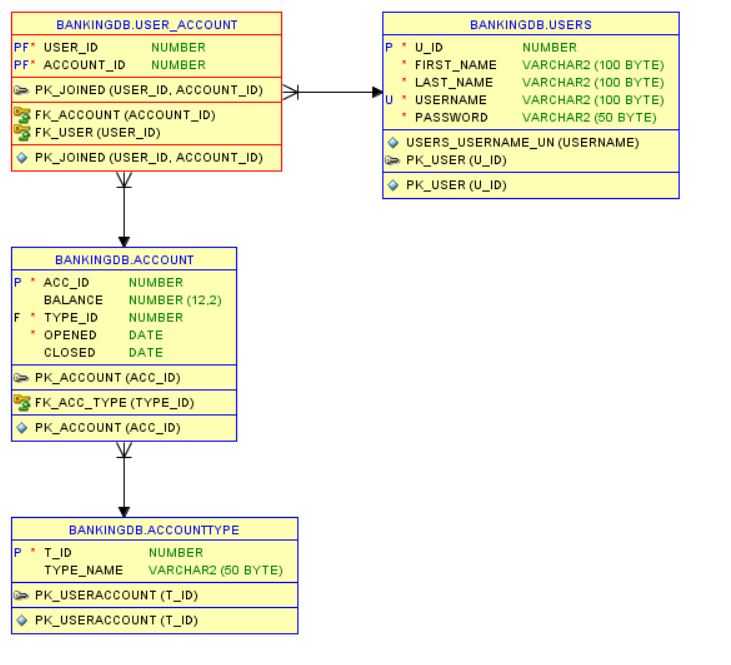

A console-based banking application
Our Fake Bank! Create an account with unverified information; deposit money that's not real; have an infinite credit limit; best of all: You can share these accounts with your friends!
Create User
Prompts the user for their first name, last name, email address and password. New user must register with a unique email address. A confirmation email is sent to user on successful registration (see Emails below).
Log In/Out
Prompts the user for their email address and password. User with given email must exist in system. Password must match the hashed password stored in the database (see Password Hashing below).
Create Account
Once logged into the system, a user may create up to six accounts. Account may be one of the following types: Checking, Savings, Credit.
Check Balance
Once the user chooses an account to manage they may check the balance of that account. Drawn credit appears as a negative balance.
Deposit
User may deposit a given amount into the account. If it is a credit account the user may not deposit if balance will exceed $0.00
Withdraw
User may withdraw a given amount from the account. If it is not a credit account user may not withdraw if balance will go below $0.00. Credit accounts have no limit.
Transfer Funds
User may transfer funds to another account. Account # must be known, and there must be a sufficient balance for the transaction. User may not transfer to/from a credit account.
Joint Accounts
User may add/remove another account holder to/from the account by email address. An account may have up to four simultaneous holders. New holder must already exist in the system.
Close Account
User may close an account that has a $0.00 balance. This account may no longer be managed from the front-end, but will still exist in the database. For eternity.
Entity-Relationship Diagram
SQL Snippets
Statement
SELECT * FROM Account_Type
PreparedStatement
SELECT users.u_id, users.first_name, users.last_name, users.username, users.password " +
FROM user_account
INNER JOIN users ON user_account.user_id = users.u_id
INNER JOIN account ON user_account.account_id = account.acc_id
WHERE account.acc_Id= ?CallableStatement
{ ? = call get_recent_accid} CREATE or replace FUNCTION get_recent_userid
return number
is
userid number;
begin
select max(u_id)
into userid
from users;
return userid;
END;Design Patterns
This application makes extensive use of the Data Access Object (DAO) design pattern. The DAO is represented by the Dao.java interface and implemented by DaoImpl.java. Service.java acts as the service layer which contains the business logic that is, in turn, needed by View.java which is the console-based front-end.
In addition, the Singleton and Factory patterns are made use of in ConnectionFactory.java to serve as a single access point for acquiring a connection to the database.